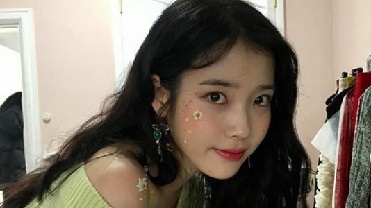
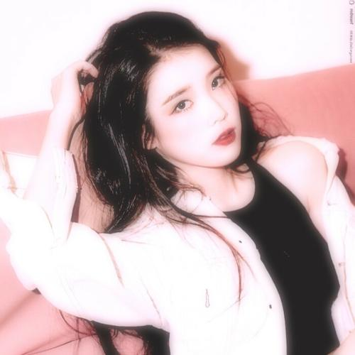
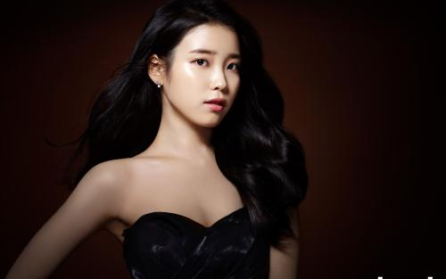

李知恩
李知恩（이지은/Lee Ji
Eun），艺名IU，1993年5月16日出生于韩国首尔特别市，韩国女歌手、演员、主持人。
重要事件
-
2008年9月，在Mnet音乐节目《M!
Countdown》中演唱歌曲《迷儿》，正式出道；随后发行首张迷你专辑《Lost
AndFound》。
-
2009年，发行首张正规专辑《GrowingUp》，同年11月发行迷你专辑《IU...Im》。
-
2010年，发行迷你专辑《Real》，主打歌《好日子》连续五周位居韩国Gaon榜榜首。
-
2011年，发行第二张正规专辑《Last
Fantasy》，全专歌曲总下载量超过1700万次。
- 2012年，名列韩国福布斯名人榜第三位 。
-
2013年，发行的第三张正规专辑《ModernTimes》展现了多元化的歌曲风格。
-
2014年，发行翻唱专辑《花书签》，同年获得韩国盖洛普调查歌手部门第一位以及第16届Mnet亚洲音乐大奖最佳女歌手奖。
-
2015年，发行迷你专辑《CHAT-SHIRE》，并被《Billboard》认可为韩国流行音乐百强榜的领跑者；同年获得韩国大众文化艺术奖国务总理表彰奖。
-
2017年，发行第四张正规专辑《Palette》和第二张翻唱专辑《花书签2》。
-
2011年，出演校园剧《dreamhigh》，并成为SBS音乐节目《人气歌谣》的固定主持人。
- 2013年，凭借周末剧《最佳李顺心》获得KBS演技大赏新人女演员奖。
-
2015年，主演KBS金土剧《制作人》。2016年，主演古装穿越《步步惊心：丽》。
- 2017年，获得2017年度MAMA最佳女歌手奖。
- 2018年，获得韩国金唱片奖音源部门大奖。
- 2019年，首次主演电影《Persona》和主演tvN爱情奇幻剧《德鲁纳酒店》
成就和荣誉
- 2008 11月份最佳专辑奖 Lost and Found （获奖）
- 2011 第66届12月份Song of the Month奖 You & I （获奖）
- 2010 6月份Song of the Month奖 Nagging 唠叨 （获奖）
- 2014 第6届年度最佳艺人奖 （获奖）
- 2012 第4届十大歌手奖 （获奖）
- 2011 第3届最佳歌曲奖 好日子 （获奖）
- 2011 第3届十大歌手奖 （获奖
- 2010 第2届十大歌手奖 （获奖）
- 2012 第7届 人气歌手奖
- 2012 第5届最佳女歌手奖
- 2012 第9届最佳流行歌曲奖 Good Day （获奖）韩国PD大赏
- 2012 第9届最佳年度歌曲奖 Good Day （获奖）
- 2012 第9届最佳女歌手奖 （获奖）韩国PD大赏
主要作品
| 歌名 |
年份 |
| 에잇 (eight) |
2020-05-06 |
| Love poem |
2019-11-1 |
| 心 |
2015-05-18 |
| 昭格洞 |
2014-10-02 |
| 你的意味 |
2014-05-21 |
| 永恒之塔 |
2012-12-14 |
| Like You |
2012-01-09 |
| 바다가 기억하는 얘기 |
2011-10-05 |
| 风之旋律 |
2011-08-31 |
| Let’s Catch The Bus |
2011-08-13 |
生活照



人物评价
李知恩因其甜美长相和萌妹气质而被韩国人民亲切的称为“国民妹妹”，凭借可爱的风格很快获得了欢迎，随后推出的《好日子》、《唠叨》等歌曲让她迎来了演艺事业的高峰，她的歌唱实力雄厚，其“3段高音”更是为人称道。她将心中的所思所想通过歌曲表达，获得了很多同龄人的共鸣，在音乐方面的不断成熟，让她从偶像进化为真正的歌手。她面对所取得的成绩表现得很谦虚，有着很冷静的头脑，在进行演艺活动的同时也不放弃学习，乖乖女的形象让很多同龄人心生敬佩，同时也获得了学生父母阶层的成年人喜爱。此外，她的表现也获得了夏东均、蜘蛛和辉星等歌坛前辈的称赞。李知恩在电视剧《Dream
High》中抛弃清新可人的形象，故意“扮丑”出现了一个胖嘟嘟的女孩，通过这个角色所展现出的演技给人带来了惊喜，而她的歌声同样有着让人心动的美。
李知恩长得清新甜美，有着一身邻家少女的气质，但在音乐上却表现强劲，她的声音干净、透明，教人动容，既有偶像歌手的外表也有实力歌手的能力
她从来不会把错误推给别人，做得好就是作曲家和工作人员的功劳，不好的话就审视自己。她自尊心很强，没有受害意识，年纪小却内功强大，非常成熟，从她身上能够学到很多